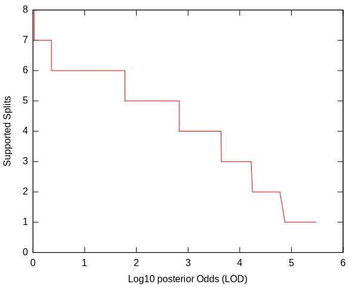
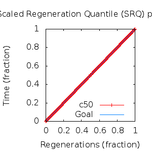

MCMC Post-hoc Analysis: 11 sequences
Data & Model
| Partition | Sequences | Lengths | Alphabet | Substitution Model | Indel Model | Scale Model |
|---|
| 1 |
E5_gammadelta_delta_aa.fas |
43 - 165 |
Amino-Acids | S1 = lg08+f |
I1 = rs07 |
scale1 ~ gamma[0.5,2] |
Scalar variables
| Statistic | Median | 95% BCI | ACT | ESS | burnin | PSRF-CI80% | PSRF-RCF |
|---|
| prior |
-114.7 |
(-137, -96.41) |
30.59 |
8827 |
375
|
0.9996 | 1.003
|
| prior_A1 |
-117.4 |
(-138.4, -110) |
2.278 |
118521 |
130
|
1 | 1.001
|
| likelihood |
-1630 |
(-1645, -1616) |
3.473 |
77753 |
79
|
0.9999 | 1.001
|
| posterior |
-1745 |
(-1766, -1727) |
35.45 |
7616 |
250
|
1 | 1.001
|
| Heat.beta |
1 |
| | | | | |
| Scale[1] |
2.619 |
(1.322, 4.575) |
1.035 |
260825 |
114
|
1 | 0.999
|
| f:pi[A] |
0.05222 |
(0.03317, 0.07468) |
7.573 |
35652 |
443
|
1 | 1.003
|
| f:pi[R] |
0.01367 |
(0.00358, 0.02722) |
8.606 |
31373 |
395
|
1 | 0.9952
|
| f:pi[N] |
0.03127 |
(0.0161, 0.04871) |
7.587 |
35588 |
370
|
1 | 0.9995
|
| f:pi[D] |
0.0485 |
(0.0252, 0.07529) |
7.876 |
34281 |
974
|
0.9999 | 1.002
|
| f:pi[C] |
0.03608 |
(0.01924, 0.05589) |
8.121 |
33246 |
250
|
1 | 0.9979
|
| f:pi[Q] |
0.04101 |
(0.0225, 0.06269) |
7.776 |
34720 |
465
|
0.9999 | 1.003
|
| f:pi[E] |
0.01781 |
(0.005891, 0.03373) |
8.233 |
32794 |
418
|
0.9999 | 1.001
|
| f:pi[G] |
0.04268 |
(0.02148, 0.06828) |
8.386 |
32197 |
460
|
1 | 0.9948
|
| f:pi[H] |
0.04304 |
(0.02436, 0.06437) |
7.886 |
34237 |
269
|
0.9999 | 1.004
|
| f:pi[I] |
0.05575 |
(0.03858, 0.0744) |
7.628 |
35394 |
428
|
0.9994 | 0.9975
|
| f:pi[L] |
0.1766 |
(0.1402, 0.2143) |
7.458 |
36204 |
536
|
1 | 0.9975
|
| f:pi[K] |
0.04242 |
(0.02204, 0.06601) |
8.181 |
33004 |
331
|
1 | 1.002
|
| f:pi[M] |
0.01568 |
(0.007489, 0.02533) |
7.731 |
34926 |
389
|
1 | 1
|
| f:pi[F] |
0.05239 |
(0.03385, 0.07318) |
8.163 |
33077 |
155
|
0.9998 | 1.001
|
| f:pi[P] |
0.02668 |
(0.01045, 0.04697) |
8.115 |
33270 |
529
|
1 | 1.008
|
| f:pi[S] |
0.04679 |
(0.02906, 0.06762) |
7.946 |
33981 |
331
|
1 | 1.004
|
| f:pi[T] |
0.0952 |
(0.06859, 0.1246) |
7.467 |
36160 |
337
|
0.9999 | 0.999
|
| f:pi[W] |
0.01954 |
(0.006718, 0.03566) |
8.076 |
33432 |
394
|
1 | 1.002
|
| f:pi[Y] |
0.04793 |
(0.02853, 0.06958) |
7.918 |
34101 |
199
|
1 | 0.9979
|
| f:pi[V] |
0.07943 |
(0.0579, 0.1028) |
7.632 |
35375 |
416
|
1.001 | 0.9987
|
| rs07:mean_length |
10.66 |
(6.204, 16.97) |
1.465 |
184261 |
112
|
1 | 1
|
| rs07:log_rate |
-3.921 |
(-4.474, -3.343) |
1.316 |
205190 |
190
|
0.9996 | 1.001
|
| |A1| |
172 |
(171, 180) |
2.483 |
108760 |
68 |
0.8333 | 1.001
|
| #indels1 |
12 |
(11, 14) |
2.116 |
127574 |
121 |
0.5 | 0.9999
|
| |indels1| |
132 |
(130, 147) |
2.257 |
119614 |
84 |
0.9231 | 1
|
| #substs1 |
236 |
(231, 240) |
2.752 |
98109 |
79 |
0.8333 | 1.001
|
| Scale1*|T| |
2.771 |
(2.334, 3.258) |
1.627 |
165946 |
93
|
1 | 1.001
|
| |A| |
172 |
(171, 180) |
2.483 |
108760 |
68 |
0.8333 | 1.001
|
| #indels |
12 |
(11, 14) |
2.116 |
127574 |
121 |
0.5 | 0.9999
|
| |indels| |
132 |
(130, 147) |
2.257 |
119614 |
84 |
0.9231 | 1
|
| #substs |
236 |
(231, 240) |
2.752 |
98109 |
79 |
0.8333 | 1.001
|
| |T| |
1.059 |
(0.5193, 1.732) |
1.003 |
269253 |
138
|
1 | 0.998
|
Phylogeny Distribution


Alignment Distribution
Partition 1
|
|
|
Diff |
|
Min. %identity |
# Sites |
Constant |
Informative |
| Initial |
FASTA |
HTML |
Diff |
|
1.43% |
165 |
1 (0.606%) |
162 (98.2%) |
| Best (WPD) |
FASTA |
HTML |
|
AU |
10.8% |
171 |
11 (6.43%) |
152 (88.9%) |
Mixing
Statistics: | scalar burnin | 974 | | scalar ESS | 7617 | | topological ESS | | | ASDSF | NA | | MSDSF | NA | | PSRF CI80% | 1.001 | | PSRF RCF | 1.008 |
|  |
Analysis
directory: /work/awillemsen/bali-phy/AlphaPVs_E5_aa_new
version: 3.3
| chain # | burnin | subsample | Iterations (after burnin) | command line | subdirectory |
|---|
| 1 |
10000 |
1 |
90000 |
bali-phy E5_gammadelta_delta_aa.fas -s 14258 -i 100000 -n AlphaPVs_E5_gammadelta_delta |
AlphaPVs_E5_gammadelta_delta-1 |
| 2 |
10000 |
1 |
90000 |
bali-phy E5_gammadelta_delta_aa.fas -s 68236 -i 100000 -n AlphaPVs_E5_gammadelta_delta |
AlphaPVs_E5_gammadelta_delta-2 |
| 3 |
10000 |
1 |
90000 |
bali-phy E5_gammadelta_delta_aa.fas -s 99685 -i 100000 -n AlphaPVs_E5_gammadelta_delta |
AlphaPVs_E5_gammadelta_delta-3 |
| P(data|M) = -1644.394 +- 0.123
|
Complete sample: 62
topologies |
95% Bayesian credible interval: 11 topologies |
Model and priors
Tree (+priors)
| topology | ~ uniform on tree topologies |
| branch lengths | ~ iid[num_branches[T],gamma[0.5,div[2,num_branches[T]]]] |
Substitution model (+priors)
| S1 | = |
lg08+f
| f:pi | ~ | dirichlet_on[letters[@a],1]
|
|
Indel model (+priors)
| I1 | = |
rs07
| rs07:log_rate | ~ | laplace[-4,0.707]
|
| rs07:mean_length | ~ | exponential[10,1]
|
|
Scales (+priors)
{kind=link}
{kind=link}
{kind=link}
{kind=link}
{kind=link}
{kind=link}
{kind=link}
{kind=link}